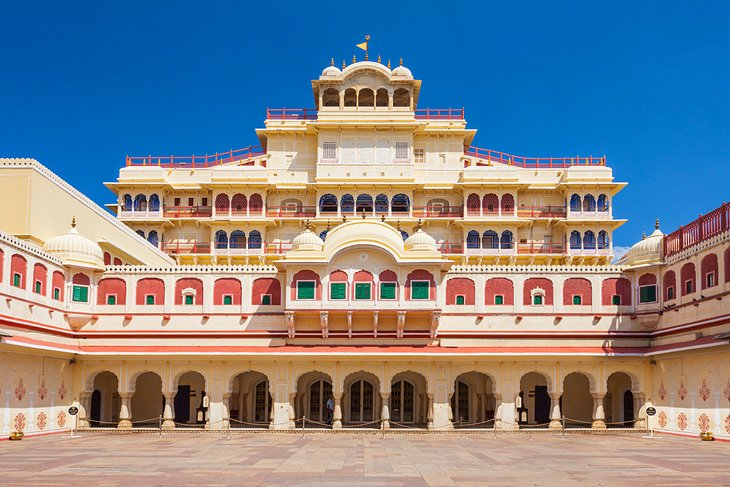
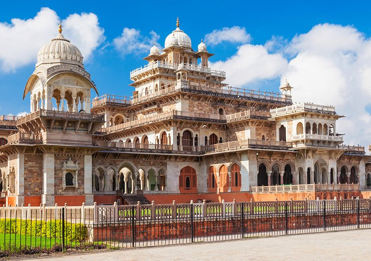
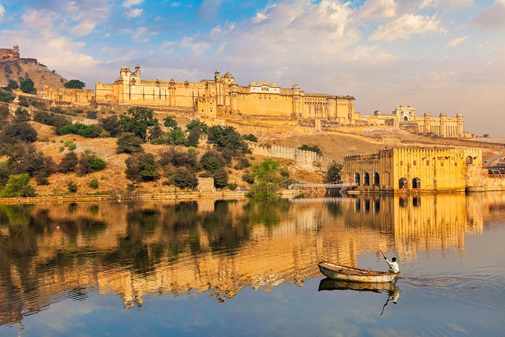
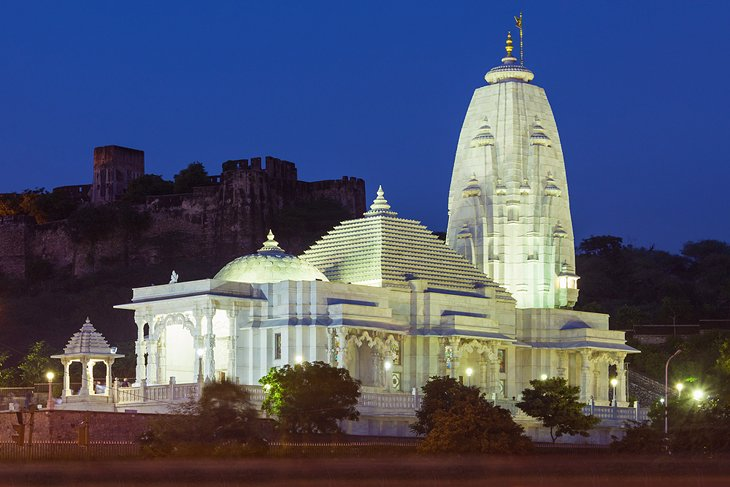
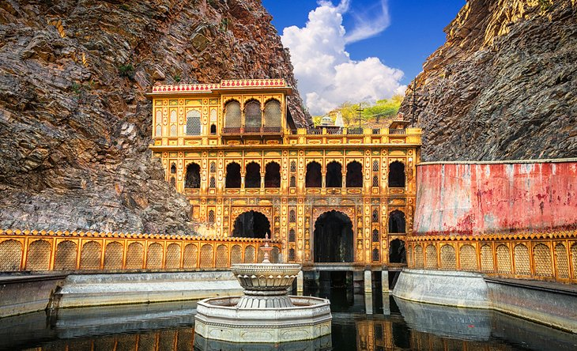
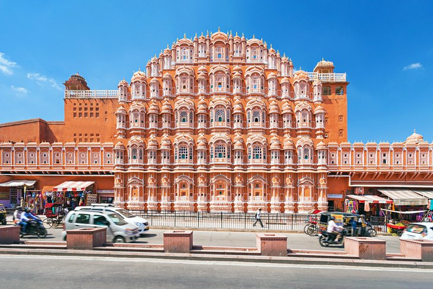
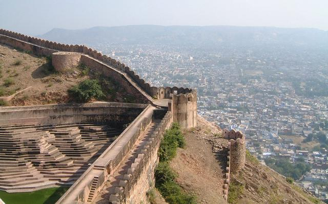
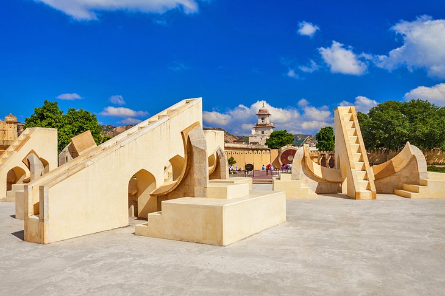
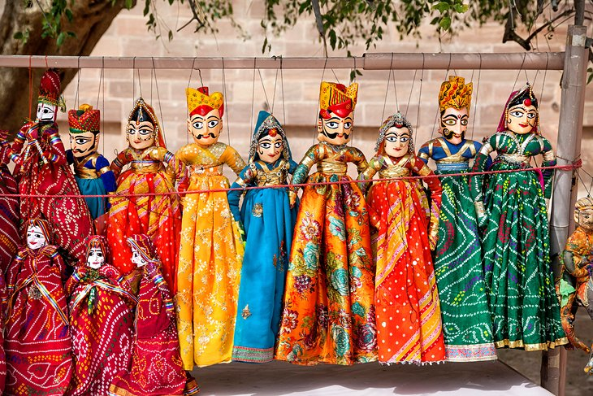
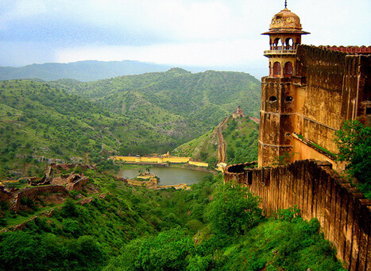

City Palace

City Palace has stood at the heart of the Old City of Jaipur for nearly three centuries, shortly after Maharaja Sawai Jai Singh II decided to relocate his court from the city of Amber. Protected by huge guard walls, the fairy-tale-like
structure is still the home of Jaipur's modern-day royal family, and is more extravagant and enchanting than you might imagine.
City Palace is more than a sand-colored regal abode—it's a sprawling complex of buildings built around a series of landscaped garden courtyards overlooking Jaipur and Lake Palace. The entire property is a stunning display of Rajasthani
and Mughal architecture.
The current occupants reside in the most eye-catching building, the Chandra Mahal, an elegant structure with curved eaves and domed rooftops. Each of its seven stories features an entirely different style. The ground floor is included
in the price of admission, but you'll need to book a private tour to go upstairs.
Other noteworthy places for sightseeing at City Palace include the Mubarak Mahal (Welcome Palace), which contains displays of dazzling costumes and textiles; the Armoury, a museum-like space dedicated to preserving finely crafted daggers
and swords; Pritam Niwas Chowk (Peacock Courtyard), which has mesmerizing doorways painted to look like the feathers of its namesake bird; and Diwan-i-Am (Hall of Public Audience), which showcases the palace's exquisite collection
of miniature paintings.
Albert Hall Museum

When English writer Rudyard Kipling visited the Albert Hall Museum in Jaipur, he wrote that it was a "rebuke to all other museums in India from Calcutta downwards." That's high praise coming from the son of a curator, and fitting for this
renowned institution.
The oldest museum in Rajasthan, the Albert Hall Museum boasts an extensive collection of art and historically significant artifacts. Come for the Egyptian mummy, stay to see antique coins from different periods in India's history, charming
permanent exhibits of miniature paintings, 18th-century costumes worn by members of different castes, and a peculiar collection of 19th-century clay figures demonstrating all the yoga poses.
Hot tip: Visit the museum at night, when multicolored lights brighten the exterior of the alluring building.
Amer Fort

Jaipur is home to one of India's most-visited forts: Amber Fort. Built in the year 1592, the sandstone and marble monolith stands atop a small hill roughly 20 minute's driving distance northeast of the center of Jaipur. It's best known
for being a pristine example of Rajasthani architecture.
Amber Palace aka Amber Fort was constructed in 1592 AD by Raja Man Singh, the Rajput commander of Akbar's army. Later it was expanded and renovated by Raja Jai Sigh I. Situated at a distance of 11 km from the city, it carries the pride
of Jaipur.
Set amidst the hills and overlooking the Maota Lake, Amer Palace is the finest example of Indo-Islamic architecture. Within the vicinity of the Amber fort there are 4 courtyards. There are various other buildings within these courtyards
i.e., Palace of Man Singh I, Garden, Tripolia gate, Lion gate, Diwan-I-Aam, Sheesh Mahal, Sukh Mahal, etc. Jaipur trip is incomplete without visiting the light show at this grand fort.
Since the Amer Palace is located on hills it is advisable to take a jeep or elephant ride to reach there.
Birla Mandir

In a city that seems to be dipped from top to bottom in pink, the stark white marble Birla Mandir stands out—big time. The Hindu temple pays tribute to Lakshmi, the goddess of wealth and purity, and Vishnu, one of the religion's main deities.
The marvelous structure exudes a quiet, peaceful vibe, offering just the right atmosphere to appreciate fine marble carvings, shrines to gods, and gorgeous sunset views. While you don't need more than 30 minutes to get a sense of the space,
the experience will prove to be a restorative break from a day of sightseeing.
Galtaji

Sources of water can be few and far between in the desert state of Rajasthan. So it's no wonder that when people discovered a natural spring in a mountain pass in the Aravalli Hills, they honored it by building the Hindu temple Galta Ji.
Nestled between cliffs, the temple features a few sacred water tanks, some with modest fountains, as well as frescoes that tell tales about Hindu god Krishna.
While the official name for this place is Galta Ji, it's better known as the Monkey Temple for the hundreds of macaques and langurs that live here. Daring tourists might opt to buy a handful of peanuts at the gate to tempt the monkeys,
but you're better off just watching the rambunctious creatures from a distance.
Hawa Mahal

If you had any preconceived notions about how the buildings in Jaipur look, they probably came from Hawa Mahal (Palace of Breeze). It has all of the distinctive architectural features that appear in postcards of the city, from the salmon-pink,
honeycombed facade, built to resemble the crown of Hindu god Krishna, to the geometric accents and rows of tiny windows.
The landmark was built in 1799 to allow royal ladies to watch festivals on the street without being seen by the public. Its 953 windows allow plenty of breeze to pass through, making it an ideal summer palace.
Through this fort all the women used to catch the glimpses of royal processions, hustles and bustles of the city. It is for the women's benefit that the Hawa Mahal was built, complete with small windows and screened balconies. This gave
the women a sense of freedom, without appearing in public.
Tourists can learn about the history of the sandstone structure at the palace's small museum—the ceremonial armor collection is particularly interesting. You can also wander the narrow hallways that run throughout the palace. Don't miss
the colorful glasswork in windows and doorways, which cast an otherworldly glow on chambers throughout Hawal Mahal.
Nahargarh Fort

When it comes to sightseeing around Jaipur, the views don't get better than what you'll find at Nahargarh Fort. Also known as Tiger Fort, the nearly 300-year-old fort overlooks the entire city from atop the Aravalli Hills—a prime location
for the structure to defend Jaipur against enemies many years ago.
More than just a formidable barrier though, this fort also contains Madhavendra Bhawan, a summer destination for royalty. The sumptuous Rajasthani building features a dozen identical boudoirs for the queens, which all connect to the king's
suite through mural-filled corridors. Tourists can also explore the fort's wax museum and sculpture park. And if you're feeling hungry, swing by one of the fort's many restaurants to tuck into traditional Indian cuisine.
Built in 1734 AD by Maharaja Sawai Jai Singh II, Nahargarh Fort along with Amer and Jaigarh forts used to form an important defence ring for the city. Located on one of the oldest hills of Aravalli, this fort offers breath-taking views
of the Pink City.
There are many buildings and structures within Nahagrah fort. There is a temple inside the fort, dedicated to the Rathore prince, Nahar Singh Bhomia. Another attraction in the fort is the Madhavendra Bhawan built by Sawai Madho Singh and
Diwan-I-Aam, an open air enclosure where the king met the common men and listened to their problems and complaints.
Jantar Mantar

At first glance, Jantar Mantar may look to be nothing more than a bunch of larger-than-life abstract sculptures. But this is not an art gallery—it's a special collection of astronomical tools started by Rajput ruler Jai Singh II to measure
the heavens nearly 300 years ago.
Each of the 20 or so structures at the UNESCO World Heritage Site serves a distinctive purpose. The observatory's massive sun dial, known as Samrat Yantra, is particularly striking. At 27 meters tall, it casts a huge shadow that accurately
measures time down to two seconds.
The elaborate Jai Prakash also tracks the passing of time, using the shadow of a metal plate suspended above a sunken bowl-like structure. Other tools at the observatory can track stars and even predict eclipses.
Witness the world's largest sundial at Jantar Mantar. Considered as one of the largest observatories in the world, Jantar Mantar is listed in UNESCO's world heritage sites as well. This place is renovated every year by the government to
offer precise measurements of time, declination of the sun and the positions of constellations, along with several other astronomical phenomena.
Markets

Jaipur is a mecca for souvenirs. Markets in the Pink City brim with everything from costume jewelry and precious gem stones to embroidered textiles, cobalt blue pottery, and Rajasthani puppets.
For a no-hassle shopping experience, head to the Handicrafts Emporium across from Ajmeri Gate. The government-run shop sells high-quality traditional handicrafts, like blue pottery decorated with yellow flowers, sets of wooden carvings
depicting Rajasthani characters, and hand-printed saris. The prices you see on these items are fixed, so while you won't be able to negotiate a discount, you can also avoid the headache of bargaining.
Johari Bazar is a jewelry-lover's paradise. The market glitters from top to bottom with dozens of shops selling everything from costume jewelry to fine silver and gold. No matter your budget, you'll find something beautiful to take home
from here.
Finally, don't leave Jaipur without a quick shopping trip to Bapu Bazar. Located just a few blocks southwest of Johari Bazaar, the tourist-favorite market is chock full of handcrafted trinkets, locally made textiles, bedazzled slippers,
and souvenirs galore.
Jal Mahal

One look at the Jal Mahal, and you might think you're seeing a mirage. The graceful palace seems to float atop the twinkling Man Sagar Lake—a calm sight compared to the rest of the frenzied city.
While it appears to have just one story, the Water Palace has four other levels submerged beneath a reservoir. Tourists can't access the site, however, that may change in the future. Rumor has it that entrepreneurs want to convert the
decaying space into a luxe restaurant.
For now, simply appreciate the beauty of the palace from afar. At night, it's lit up in all its glory, casting a golden, glowing reflection on the water.
Jaigarh Fort

Located on the Hill of Eagles, Jaigarh fort was built in 1726 AD by Sawan Jai Singh II. Jaigarh Fort is located at a height of 500 feet above sea level and offers panoramic views of the surrounding. It houses the world's largest cannon
on the wheels called 'Jaivana Cannon'. There are various other attractions within the fort like Laxmi Vilas, Lalit Mandir, Aram Mandir and the Vilas Mandir.
Jaigarh Fort is made-up of sandstones and is spread over an area of 3 km. Made with the purpose of protecting Amer Fort, Jaigarh fort is considered as the strongest monument of Jaipur. Also known by the name of 'Victory Fort', this place
was considered as a storehouse of all the war amours, cannons, arms and ammunitions. There is a Persian style garden within the complex of the fort which is divided into 4 parts. The best part about the fort is its windows which are
made of lattices. These windows allow a complete view of the exteriors, but nothing can be observed from the outside.